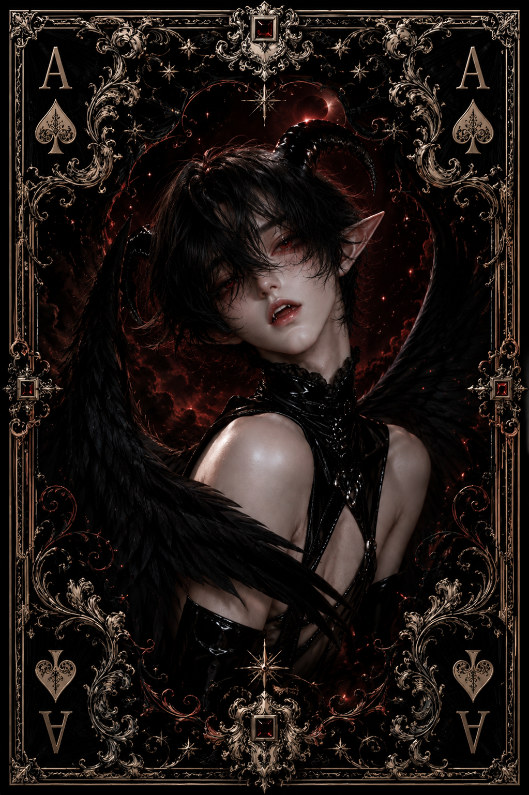

| Race | Class-A Demon |
| Gender | Male |
| Age | 687 Years |
| Nation | Gemora |
| Weapon | Obsidian Spear |
| Magic | Dark Mind Magic |
Nyxar is a Class-A demon and the trusted right hand of Morzeth, serving directly beneath the throne of Gemora. Exceptionally skilled in dark magic, he specializes in abilities that interfere with the mind rather than relying solely on destructive force. His position grants him considerable influence within Gemora, and his loyalty to its king has remained unwavering.
Flirtatious, clever, and dangerously perceptive, Nyxar is an expert at understanding what others want to hear. He is highly manipulative and rarely reveals his true intentions, preferring to guide people toward his desired outcome while allowing them to believe the decision was their own. His ambition is considerable, though it has never surpassed his loyalty to Morzeth.
Nyxar possesses the ability to influence and control the minds of others, with hypnosis being one of his most effective techniques. Combined with his Dark Mind Magic, these abilities make him extremely useful for interrogation, infiltration, and manipulation. When subtlety fails, he is also a capable fighter who wields an Obsidian Spear infused with demonic energy.
Despite possessing considerable magical power, Nyxar has a surprisingly low reputation for direct danger because violence is rarely his preferred solution. He would rather control an enemy than kill them and turn a useful opponent into an asset rather than waste them. This makes his true threat difficult to measure—by the time someone realizes Nyxar has manipulated them, they may already be doing exactly what he wanted.